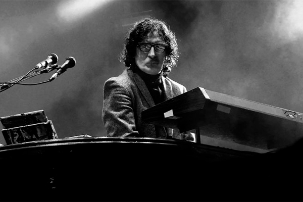

Document Object Musicians

Charly García tocando el piano
Buscamos los datos de la imagen de Charly García.
Al hacer click, debemos cambiar el src por el de la foto del Flaco Spinetta.
Debemos lograr esa alternancia en cada click.
El párrafo de Charly debe estar en red y el de Spinetta en blue, además de cambiar su contenido.